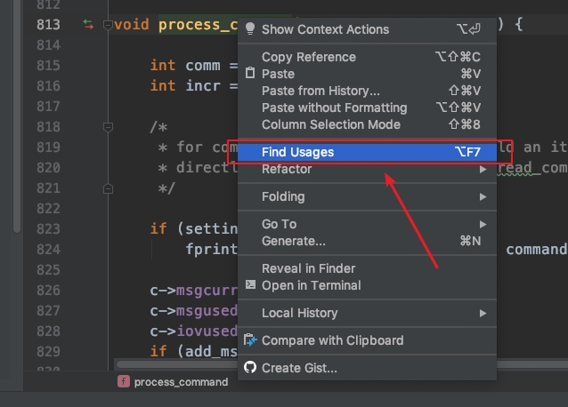

在phpstorm中三分钟搭建laravel框架源码阅读环境
laravel框架作为php语言排名第一的框架，源码也是非常值得研究的
作者在phpstorm里搭建了一套源码阅读环境，研究搭建这套环境花了些时间，作者对这个搭建步骤进行优化总结，使用下面的步骤就可以快速完成搭建了
下载源代码
github源码地址：https://github.com/laravel/framework
使用git下载源码
git clone https://github.com/laravel/framework.git
效果如下

下载依赖
laravel框架使用composer管理依赖，进入到framework目录，使用composer install命令下载依赖就可以了，命令如下
cd framework
composer install
查看执行效果：

整理现行规范中没有明确的规范
sonarqube 检测3A以上
可以使用docker搭建sonarqube检测服务器: https://github.com/SonarSource/docker-sonarqube
java
遵守阿里巴巴的p3c规范：https://github.com/alibaba/p3c
php
遵守psr规范: https://psr.phphub.org/
c#
无官方，暂行：https://gist.github.com/zhuqling/a2700703d088b8746f0c
数据库
- 字段长度尽量使用2的次幂，做计算机字节长度对齐，比如 varchar(16)
redis
- 通用的redis key不用加项目前缀
- 多个单词或者值之间使用:进行分割，符合阿里云Redis开发规范，同时在rdm等客户端中可以显示层级
jetbrains、idea系列编辑器安装与调优
关闭光标闪动
Editor -> General -> Appearance -> Caret blinking 关闭
clion调试Makefile项目
比如memcached 1.2.0: https://github.com/memcached/memcached/releases/tag/1.2.0
cmake_minimum_required(VERSION 3.12)
project(memcached)
set(CMAKE_CXX_STANDARD 11)
set(BUILD_DIR ${PROJECT_SOURCE_DIR}) #设置编译目录,也就是Makefile文件所在目录
message(${BUILD_DIR}) #打印目录路径
set(CMAKE_CXX_FLAGS "${CMAKE_CXX_FLAGS} -std=c++11")
add_custom_target(memcached COMMAND make -C ${BUILD_DIR}) #最关键的就是这句, 设置外部编译文件而不是使用CMakeLists.txt
aux_source_directory(. source_list)
add_executable(source_inteligence ${source_list})
下面这两行
aux_source_directory(. source_list)
add_executable(source_inteligence ${source_list})
添加一个source_inteligence可执行结果是为了让编辑器可以正确的提示代码
find usage
find usage查找符号使用的位置在调试源码时非常有用

对应的快捷键是command + f7
Copyright © 2015 Theme used GitHub CSS. 访问人/ 次